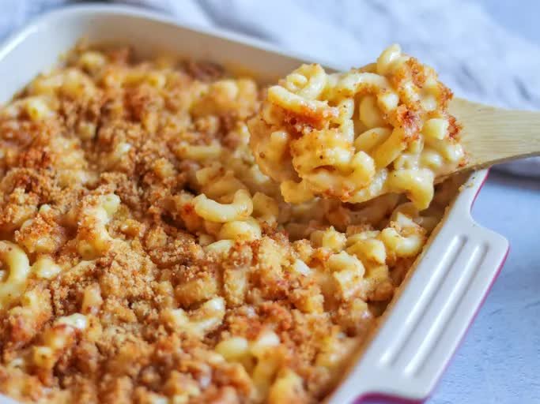

Home
Homemade mac and cheese

Description
Mac and cheese is a classic comfort food that is loved by kids and adults alike. This homemade version is
creamy,
cheesy, and delicious. Made with a blend of cheddar and mozzarella cheese, this mac and cheese is sure to be a
hit
at your next family dinner or potluck.
Ingridients
- 8 ounces (225g) elbow macaroni
- 2 tablespoons butter
- 2 tablespoons all-purpose flour
- 1 cup milk
- 1 cup shredded cheddar cheese
- 1 cup shredded mozzarella cheese
- Salt and pepper, to taste
- 1/4 cup breadcrumbs (optional, for topping)
- 1/4 cup grated Parmesan cheese (optional, for topping)
Steps
-
Cook the Macaroni: Cook the macaroni according to package instructions. Drain and set
aside.
-
Make the Cheese Sauce: In a medium saucepan, melt the butter over medium heat. Stir in the
flour and cook for 1 minute. Gradually whisk in the milk and cook, stirring constantly, until the sauce is
thickened and bubbly. Remove from heat and stir in the cheddar and mozzarella cheese until melted. Season
with salt and pepper to taste.
-
Combine the Macaroni and Cheese Sauce: Add the cooked macaroni to the cheese sauce and stir
until well combined.
-
Top with Breadcrumbs and Parmesan Cheese: Transfer the mac and cheese to a baking dish.
Sprinkle with breadcrumbs and grated Parmesan cheese, if desired.
-
Bake: Bake in a preheated 375°F (190°C) oven for 20-25 minutes, or until the top is golden
brown and the cheese is bubbly.